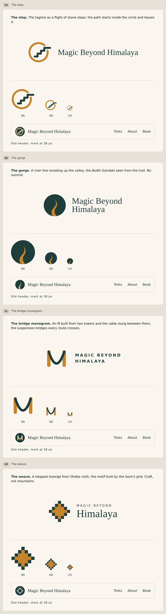

Draft only. Nothing here is on the website yet.
Please look at all four and tell me which one you like. Reply with the code, for example 1a. You can also say what you would change.
Under each one you can see the mark at three sizes, and how it looks in the website header at its real size.

If you already have a logo, tell me and I will use yours instead. Nothing has been decided.